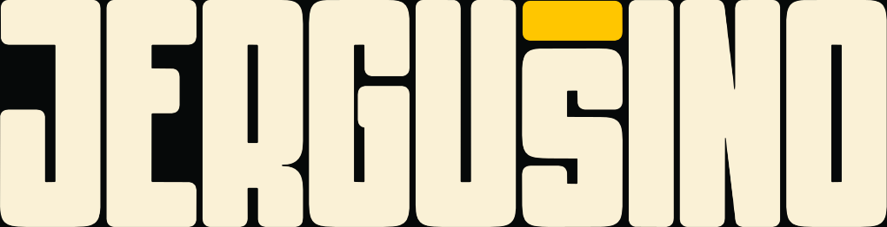

12 paliet, ktoré spolu fungujú. Každá má 5 farieb s HEX a RGB kódmi.
Vyber jednu, hoď ju do projektu a drž pravidlo 60 / 30 / 10: 60 % hlavná farba, 30 % doplnková, 10 % akcent.
stiahnuť PDF
tvoje
12 paliet, ktoré spolu fungujú. Každá má 5 farieb s HEX a RGB kódmi.
Vyber jednu, hoď ju do projektu a drž pravidlo 60 / 30 / 10: 60 % hlavná farba, 30 % doplnková, 10 % akcent.
stiahnuť PDFklikni na farbu a skopíruješ jej HEX kód
paleta 01
teplá a energická. na plagáty a social.
paleta 02
jemná a mäkká. na lifestyle, wellness a značky.
paleta 03
hlboká a pokojná. na tech a tmavé témy.
paleta 04
tmavá a drzá, no stále čitateľná. na eventy, hudbu a plagáty.
paleta 05
prirodzená a teplá. na remeslo, kaviarne a handmade.
paleta 06
kľudná neutrálna báza a dva akcenty. na čistý dizajn.
paleta 07
zeleň a hlina. na eko, outdoor a zdravie.
paleta 08
modrá s pieskom a korálom. na travel, vodu a leto.
paleta 09
teplý vintage vibe. na plagáty a obaly.
paleta 10
žltá a takmer čierna. silný kontrast, vždy čitateľné.
paleta 11
elegantná a prémiová. na módu, gastro a svadby.
paleta 12
hravá, ale nosná. na mladú značku, merch a reels.
Palety môžeš voľne použiť vo svojich projektoch. PDF prosím nepredávaj a nezdieľaj ako vlastné, radšej pošli kamarátovi odkaz na jergusino.com/palette-pack/.